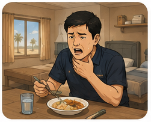
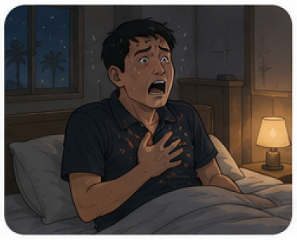
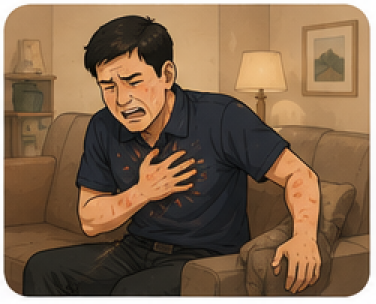
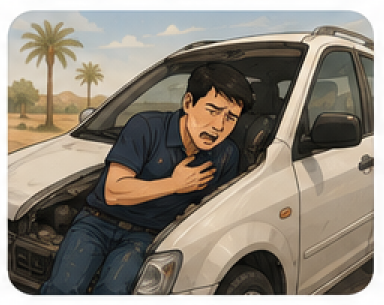

🇰🇷 KO
🇺🇸 EN
BNPP · Team Korea
혼자 있을 때를
대비하는
Survival Cards
상황을 미리 보고, 첫 행동을 기억하고, 팀과 공유하세요.
35
Cards
2
Parts
긴급 연락
📞
BNPP Emergency
800-7999
›
1
이름 · 위치 · 증상 말하기
2
문 잠금 해제하기
이번 주 미션
Quick Mission
#001
🍅
목에 뭔가 걸렸다
혼자 숙소에서 과일을 먹다 갑자기 숨이 막혔습니다. 당신의 첫 번째 행동은?
▶
카드 보기
추천 카드

#001 · BNPP
음식이 목에 걸렸을 때
BNPP

#002 · BNPP
자다가 숨이 막혀 깼을 때
BNPP

#006 · BNPP
갑작스러운 흉통
BNPP

#017 · OUTSIDE
운전 중 흉통
Outside
전체 카드 보기
→
돌아가기
📋
카드 보기
다음
→
정답
다시 풀기
카드 보기
홈으로
Survival Cards
전체 35
🏠 BNPP 20
🚗 Outside 15
카드 목록
카드 공유하기
취소
이미지 저장 · 공유
홈
카드